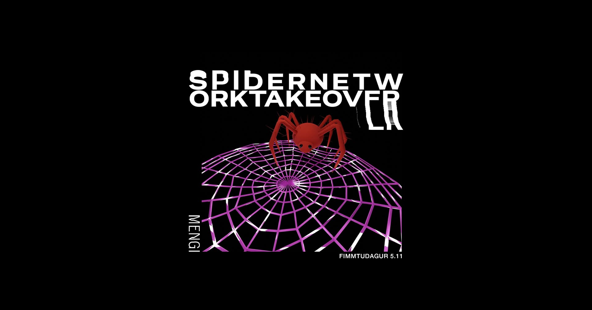
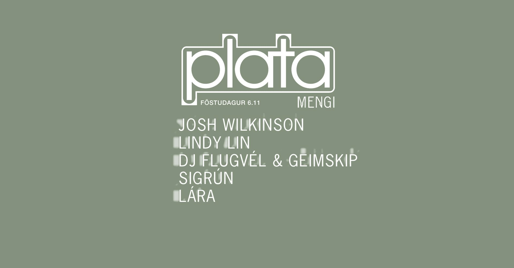
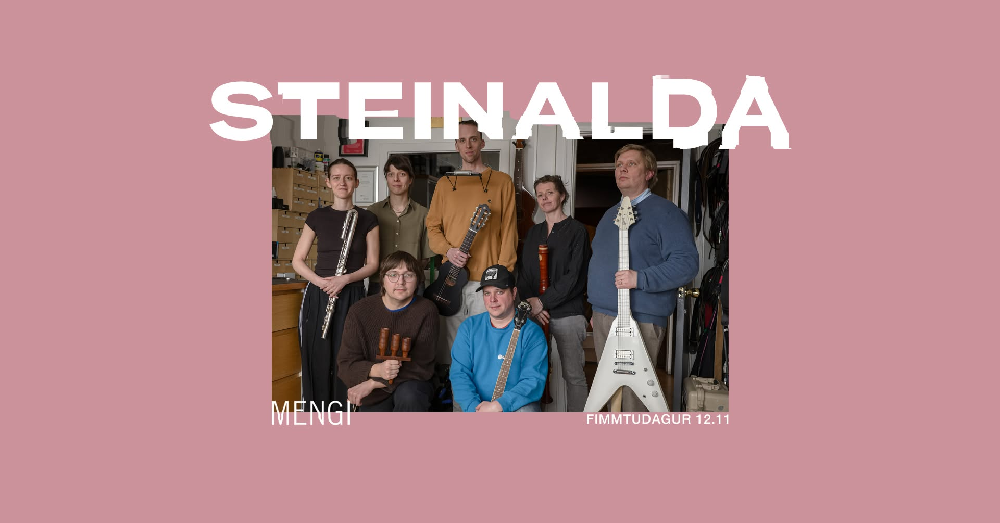
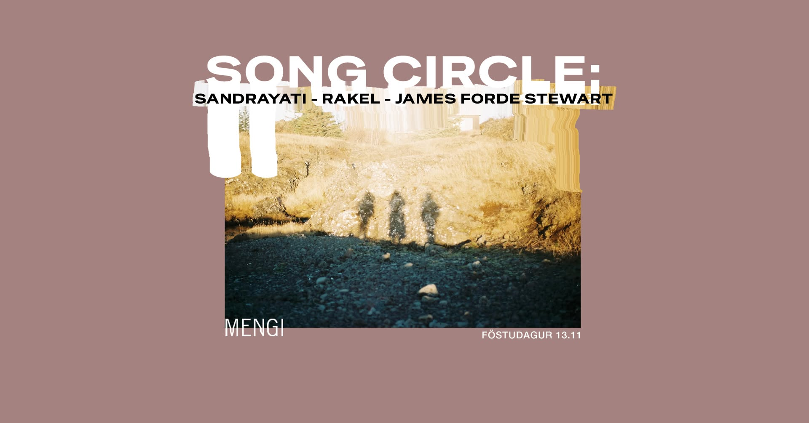
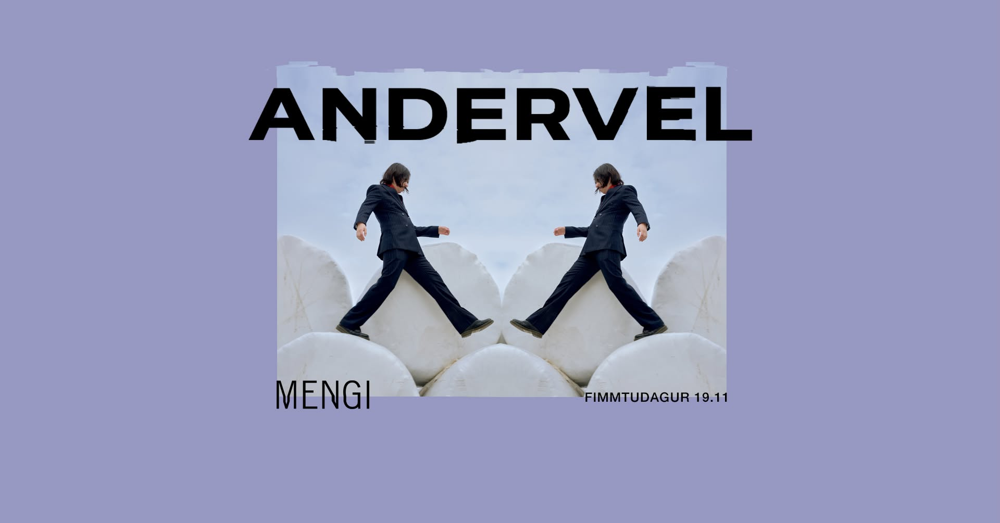
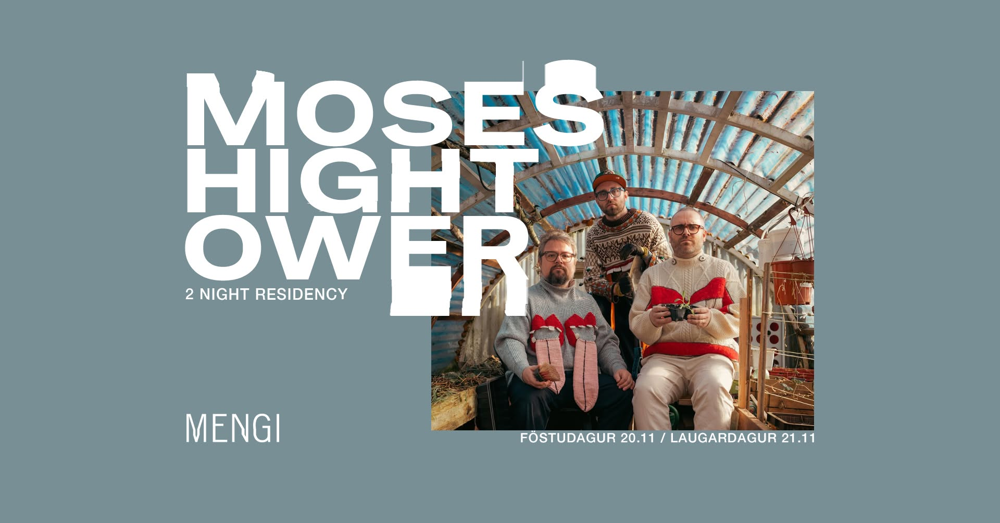
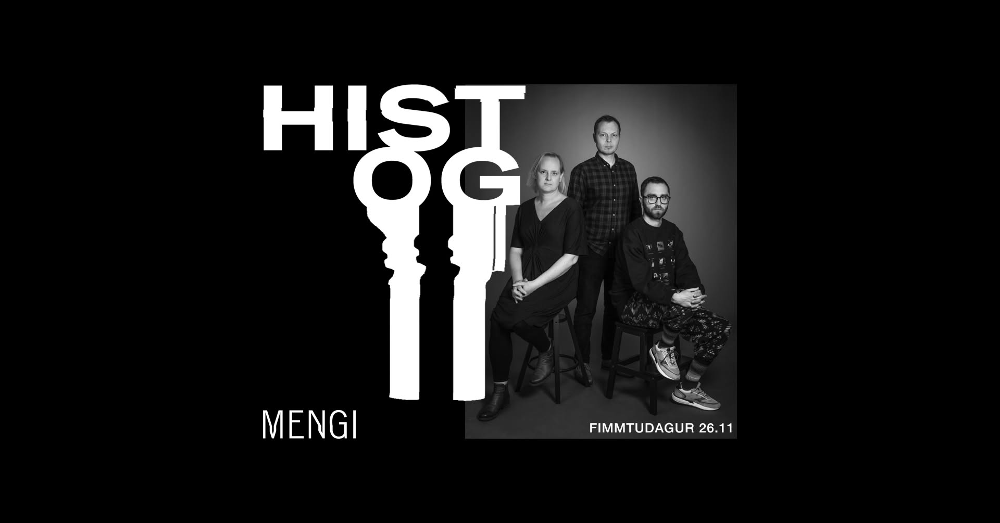

Upcoming Events

THU 05.11 SPIDER NETWORK TAKEOVER
Tickets Thursday, November 5th SPIDER NETWORK TAKEOVER more info tba

FRI 06.11 PLATA: Josh Wilkinson, Lindy Lin, DJ Flugvél & Geimskip, Sigrún, Lára
Tickets plata is a new label based in Reykjavík focusing on curious music locally and elsewhere. Performers: Josh Wilkinson Lindy Lin DJ Flugvél & Geimskip Sigrún Lára 17-22 free/pwyc suggested price 1500 kr

THU 12.11 Steinalda
Tickets Thursday, November 12th STEINALDA doors 19:30 / show 20:00 2500kr / 2000kr students / pay what u can Steinalda er hljómsveit sem leikur tónlist eftir Guðmund Stein Gunnarsson og gerði meðal annars garðinn frægann með lögunum um Landvættina fjóra árið 2021. Mengi hefur löngum verið heimavöllur Steinöldu og hyggst hún nú flytja þar verk sem hafa einungis verið flutt lengst upp í Árbæ en verða nú loksins frumflutt í hundrað og einum. Þau heita 'Hugleiðingar um sameiginlegann grundvöll' og 'Hugleiðingar um mikilvægi áningarstaða'. Þá er aldrei að vita nema við þetta bætist nýjir eða gamlir slagarar eða að tekið verði við óskalögum úr verkasafni sveitarinnar. Sveitin ætlar að fylgja Landvættunum fjórum eftir á næstunni með holskeflu af nýjum hljómplötum. Sveitina skipa ásamt Guðmundi Steini, Andrés Þór Þorvarðarson, Ásthildur Ákadóttir, Óskar Magnússon, Páll Ivan frá Eiðum, Steinunn Vala Pálsdóttir og Þórunn Björnsdóttir. Þau spila öll á alls konar. ----- Steinalda is an ensemble that focuses on the work of composer Guðmundur Steinn Gunnarsson. It is highly experimental yet leaving you with microtonal melodies you'll be humming all day long. The ensemble (or band) did a record called 'Landvættirnar fjórar' in 2021 and is soon going to follow it up with a string of new releases. Some of the works have been dedicated to old gas stations or video rentals or other Reykjavík landmarks that do not exist anymore. They will play two such pieces along with newer or older material and possibly take requests from their repertoire. The group consists of: Andrés Þór Þorvarðarson, Ásthildur Ákadóttir, Guðmundur Steinn Gunnarsson, Óskar Magnússon, Páll Ivan frá Eiðum, Steinunn Vala Pálsdóttir and Þórunn Björnsdóttir. They all play all kinds of things.

FRI 13.11 Sandrayati, Rakel, James Forde Stewart
Tickets Friday, November 13th SONG CIRCLE: Sandrayati Rakel James Forde Stewart doors 19:30 / show 20:00 2500kr / 2000kr students / pay what u can Join Sandrayati, RAKEL , James Forde Stewart and friends for an intimate evening of songs at Mengi. Gathering with friends around original music, Song Circle is an invitation to slow down, listen closely, and share space and stories together. A warm evening of original music, good company, and a little Reykjavík November cosiness

THU 19.11 Andervel
Tickets Thursday, November 19th ANDERVEL doors 19:30 / show 20:00 2500kr / 2000kr students / pay what u can Earnest, intimate, heartfelt, delicate: Andervel is the music project of indie-folk artist José Luis Anderson. Born in Mexico, based in Iceland, Anderson creates a unique brand of folk music, seen through the lens of multicultural identity. Andervel draws from a broad lineage of lyric-driven songwriting rooted in the folk tradition, creating intimate, expressive works whose emotional directness continues to resonate in live performances. Defined by a timeless voice and carefully crafted lyrics moving seamlessly between Spanish, Icelandic, and English. “A breathtaking folk composition that drifts in like a warm summer breeze and settles somewhere deep in the chest.” Atwood On Ironclad and Palm Trees, Andervel’s debut album, the musician unveils his most fully realised and culturally interwoven work to date. A folk-leaning, multilingual record shaped by migration, memory and the meeting of two homelands. Where the warmth of Mexico meets the windswept quiet of Iceland For more information www.andervel.com

20.11 - 21.11 Moses Hightower: 2 Night Residency
Tickets MOSES HIGHTOWER: 2 NIGHT RESIDENCY Friday, November 20th / Saturday, November 21st doors 19:30 / show 20:00 4500kr / 4000kr students MORE INFO TBA TICKETS: NIGHT ONE (20.11) NIGHT TWO (20.11)

THU 26.11 HIST OG
Tickets Thursday, November 26th HIST OG doors 19:30 / show 20:00 2500kr / 2000kr students / pay what u can Eiríkur Orri Ólafsson: trumpet, electronics Róberta Andersen: guitar, bass, synth Magnús Trygvason Elíassen: drums, percussion Founded in 2017 to distil a murky blend of jazz and electronic music, hist og is a trio featuring Eiríkur Orri Ólafsson on trumpet and electronics, Róberta Andersen on guitar, bass and synth, and Magnús Trygvason Eliassen on drums and percussion. Through the lens of their shared musical language, they explore a Day-Glo lit ruminative world of improvisation, jazz and electronic music. Hist og has released four albums, days of tundra (2019), hits of (2020), holy ghost of (2023), and Hist Highness (2026). the first three records have received wide praise, harvesting six nominations to the Icelandic Music Awards, a seat on the venerated Kraumur list in 2019 and 2020. Days of Tundra was named "improv of the year" by Morgunblaðið in 2019. Music critic Arnar Eggert Thoroddsen wrote "smashing stuff … every song is rigidly stamped by the seal of this super-trio." Kevin Whitlock of Jazzwise wrote this about their 2024 Reykjavík Jazz Festival appearance: "they are at once thunderous, producing huge walls of sound, and spacey; while also laying down serious grooves. […] They'd go down a storm at a venue like London's Café OTO – let's hope they visit the UK soon." The members of hist og have worked with countless outfits over the years, such as múm, Sin Fang, Amiina, Sigur Rós, Kira Kira, Seabear and others. they have also collaborated with supreme jazz entities such as ADHD, Hilmar Jensson, Skúli Sverrisson and Mógil. ------ Tríóið hist og var stofnað í lok árs 2017 til þess að rugla saman reitum raf-og djasstónlistar. Tríóið skipa Eiríkur Orri Ólafsson, sem leikur á trompet, trommuheila og hljómboð, Róberta Andersen á gítar, bassa og hljómborð og Magnús Trygvason Eliassen á trommur og slagverk. Meðlimir tríósins beina stækkunarglerinu að sameiginlegum snertifleti sínum, með innhverfri, úthverfri og slagþungri blöndu af djass, raf-, og spunatónlist sem kemur víða við. hist og á að baki fjórar plötur, Days of Tundra (2019), hits of (2020), holy ghost of (2023), og Hist Highness (2026). Fyrri þrjár plöturnar hlutu mikið lof og hefur hljómsveitin landað þremur tilnefningum til Íslensku Tónlistarverðlaunanna í djassflokki bæði árin, sem og sæti á Kraumslistanum 2019 og "Spuni Ársins" sama ár hjá Morgunblaðinu. Um hits of skrifaði Arnar Eggert Thoroddsen hjá Morgunblaðinu ma. "Hörkustöff … stimpill þessa ofurtríós kirfilega á öllum smíðum." Allar plöturnar hafa hlotið sæti á Kraumslistanum. Breska tímaritið Jazzwise hafði þetta að segja um tónleika þeirra á Jazzhátíð í ágúst síðastliðnum: "they are at once thunderous, producing huge walls of sound, and spacey; while also laying down serious grooves. […] They'd go down a storm at a venue like London's Café OTO – let's hope they visit the UK soon." Meðlimir hist og hafa starfað um árabil með hinum ýmsustu hljómsveitum, svo sem múm, amiinu og Sin Fang, Sigur Rós, Kiru Kiru, Benna Hemm Hemm og Seabear, ásamt ótal samstarfsverkefna á sviði djasstónlistar með ADHD, Hilmari Jenssyni, Skúla Sverrissyni og Mógil.